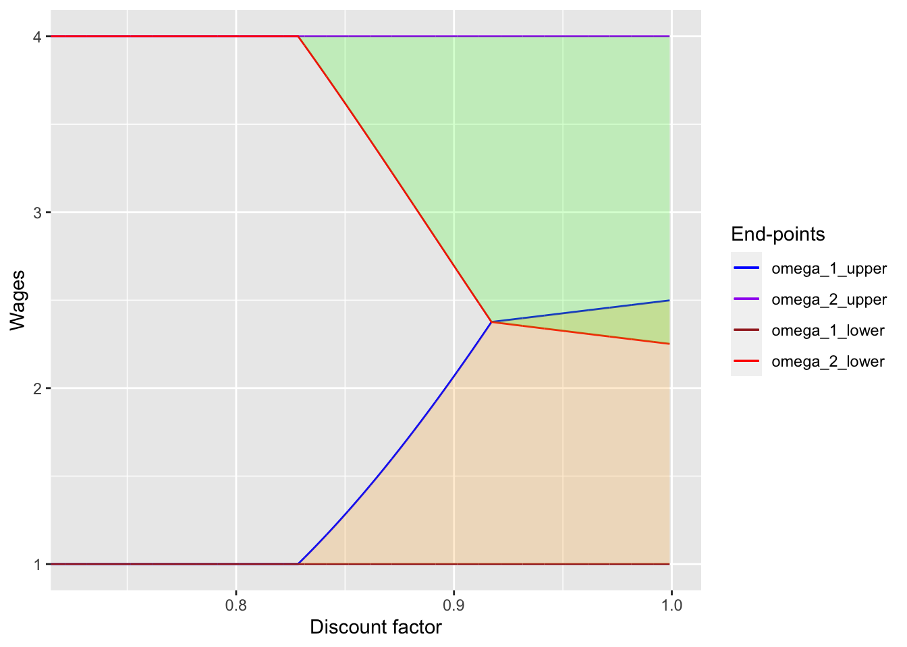
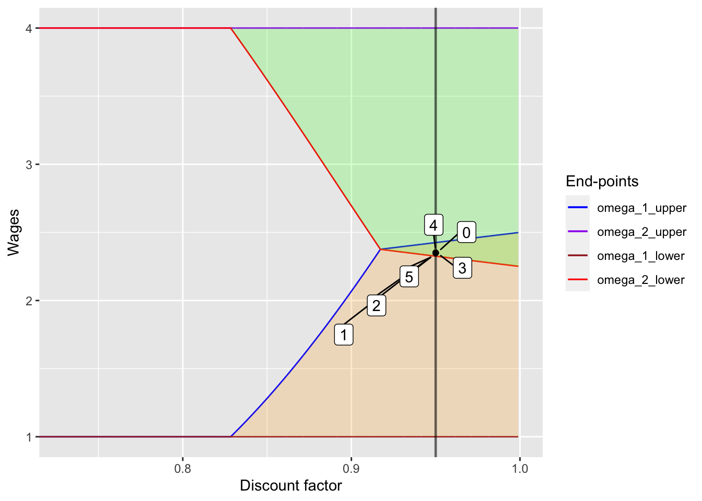

In this document I replicate Figure 1 of Thomas & Worrall (1988). For this, I need to derive 4 end-points of wage intervals: \(\omega_{1, lower}, \omega_{1, upper}, \omega_{2, lower}, \omega_{2, upper}\). However, note that \(\omega_{1, lower} = w(1)\) and \(\omega_{2, upper} = w(2)\) by Proposition 3. Therefore, below I show how to derive the other two end-points and replicate the figure.
First, I consider the case where there is no overlap (\(\omega_{1, upper} < \omega_{2, lower}\)). To calculate the end-points of the intervals, evaluate profits at the top of the state 1 interval (where the discounted utility is 0) and utility at the bottom of the state 2 intervals (where the discounted profit is 0). Note that once these end-points are realized, in the next period the contract pays wages \(\omega_{1, upper}\) and \(\omega_{2, lower}\) with probabilities \(p(1)\) and \(p(2)\), respectively, and this pattern continues forever. (In some sense this is a steady ``state’’ where contract payments bounce around between \(\omega_{1, upper}\) and \(\omega_{2, lower}\), but not otehr payments.) The conditions are
\(\begin{aligned} &\quad w(1) - \omega_{1,upper} + \frac{\alpha}{1 - \alpha} (p(1) (w(1) - \omega_{1, upper}) + p(2) (w(2) - \omega_{2, lower})) &= 0 \\ &\Leftrightarrow (1 - \alpha) (w(1) - \omega_{1,upper}) + \alpha ((1 - p(2)) (w(1) - \omega_{1, upper}) + p(2) (w(2) - \omega_{2, lower})) &= 0 \\ &\Leftrightarrow (1 - \alpha p(2)) (w(1) - \omega_{1,upper}) - \alpha p(2) (\omega_{2, lower} - w(2))) &= 0 \\ \end{aligned}\)
and
\(\begin{aligned} &\quad u(\omega_{2,lower}) - u(w(2)) + \frac{\alpha}{1 - \alpha} (p(1) (u(\omega_{1, upper}) - u(w(1))) + p(2) (u(\omega_{2, lower}) - u(w(2)))) &= 0 \\ &\Leftrightarrow (1 - \alpha) (u(\omega_{2,lower}) - u(w(2))) + \alpha (p(1) (u(\omega_{1, upper}) - u(w(1))) + (1 - p(1)) (u(\omega_{2, lower}) - u(w(2)))) &= 0 \\ &\Leftrightarrow \alpha p(1) (u(\omega_{1, upper}) - u(w(1))) - (1 - \alpha p(1)) (u(w(2)) - u(\omega_{2, lower})) &= 0 \end{aligned}\)
Below, I define a function to solve this system of equations:
# Define utility function
u <- function(x){
object <- sqrt(x)
return(object)
}# Set the parameter values
w_1 <- 1
w_2 <- 4
p_1 <- 1 / 2
p_2 <- 1 / 2# For the case where there is no overlap, solve \omega_{2, lower} and \omega_{1, upper}
no_overlap <- function(x, alpha, w_1, w_2, p_1, p_2){
y <- numeric(2)
y[1] <- (1 - alpha * p_2) * (w_1 - x[1]) - alpha * p_2 * (x[2] - w_2)
y[2] <- alpha * p_1 * (u(x[1]) - u(w_1)) - (1 - alpha * p_1) * (u(w_2) - u(x[2]))
return(y)
}Given the function to solve \(\omega_{2, lower}\) and \(\omega_{1, upper}\), I obtain the value of \(\alpha_*\), the cutoff of no-overlap and spot-market-like situations. Also, I calculate the value of \(\alpha^*\), the cutoff of no-overlap and overlapping situations.
alpha_vals <- seq(0.50, 0.999, by = 0.0001)
omega_1_upper_vals_no_overlap <- numeric(length(alpha_vals))
omega_2_lower_vals_no_overlap <- numeric(length(alpha_vals))
same_as_spot <- numeric(length(alpha_vals))
x_start <- c((1 + 4) / 2, (1 + 4) / 2)
for (alpha in 1:length(alpha_vals)){
no_overlap_solutions <- nleqslv(x_start,
no_overlap,
alpha = alpha_vals[alpha],
w_1 = w_1,
w_2 = w_2,
p_1 = p_1,
p_2 = p_2)$x
omega_1_upper_vals_no_overlap[alpha] <- no_overlap_solutions[1]
omega_2_lower_vals_no_overlap[alpha] <- no_overlap_solutions[2]
same_as_spot[alpha] <- is.logical(all.equal(no_overlap_solutions[1], w_1, tolerance = 1e-3))
}
alpha_lower_star <- alpha_vals[max(which(same_as_spot == 1))]
alpha_upper_star <- alpha_vals[min(which(omega_1_upper_vals_no_overlap
>= omega_2_lower_vals_no_overlap))]It turned out that \(\alpha_*\) is 0.8285, and \(\alpha^*\) is 0.9173.
Next, I consider the case where there are overlaps. In the same way as above, to calculate the end-points of the intervals, evaluate profits at the top of the state 1 interval (where the discounted utility is 0) and utility at the bottom of the state 2 intervals (where the discounted profit is 0): Note that once these end-points are realized, the future contract payments are unchanged no matter which state realizes (see Proposition 2). The conditions are
\(\begin{aligned} &\quad w(1) - \omega_{1,upper} + \frac{\alpha}{1 - \alpha} (p(1) (w(1) - \omega_{1, upper}) + p(2) (w(2) - \omega_{1, upper})) &= 0 \\ &\Leftrightarrow (1 - \alpha) (w(1) - \omega_{1,upper}) + \alpha ((1 - p(2)) (w(1) - \omega_{1, upper}) + p(2) (w(2) - \omega_{1, upper})) &= 0 \\ &\Leftrightarrow \omega_{1,upper} - (1 - \alpha p(2)) w(1) - \alpha p(2) w(2) &= 0 \\ \end{aligned}\)
and
\(\begin{aligned} &\quad u(\omega_{2,lower}) - u(w(2)) + \frac{\alpha}{1 - \alpha} (p(1) (u(\omega_{2, lower}) - u(w(1))) + p(2) (u(\omega_{2, lower}) - u(w(2)))) &= 0 \\ &\Leftrightarrow (1 - \alpha) (u(\omega_{2,lower}) - u(w(2))) + \alpha (p(1) (u(\omega_{2, lower}) - u(w(2))) + (1 - p(1)) (u(\omega_{2, lower}) - u(w(2)))) &= 0 \\ &\Leftrightarrow u(\omega_{2, lower}) - \alpha p(1) u(w(1)) - (1 - \alpha p(1)) u(w(2)) &= 0 \end{aligned}\)
Below I define the function to solve this system of equations:
# For the case where there are overlaps, solve \omega_{2, lower} and \omega_{1, upper}
overlap <- function(x, alpha, w_1, w_2, p_1, p_2){
y <- numeric(2)
y[1] <- x[1] - (1 - alpha * p_2) * w_1 - alpha * p_2 * w_2
y[2] <- u(x[2]) - alpha * p_1 * u(w_1) - (1 - alpha * p_1) * u(w_2)
return(y)
}and the end-points at each \(\alpha\) are calculated as follows:
alpha_vals <- seq(0.50, 0.999, by = 0.0001)
omega_1_upper_vals_overlap <- numeric(length(alpha_vals))
omega_2_lower_vals_overlap <- numeric(length(alpha_vals))
x_start <- c((1 + 4) / 2, (1 + 4) / 2)
for (alpha in 1:length(alpha_vals)){
overlap_solutions <- nleqslv(x_start,
overlap,
alpha = alpha_vals[alpha],
w_1 = w_1,
w_2 = w_2,
p_1 = p_1,
p_2 = p_2)$x
omega_1_upper_vals_overlap[alpha] <- overlap_solutions[1]
omega_2_lower_vals_overlap[alpha] <- overlap_solutions[2]
}With the information at hand, I replicate Figure 1 in the original paper:
alpha_vals <- seq(0.50, 0.999, by = 0.0001)
omega_1_upper_vals <- numeric(length(alpha_vals))
omega_2_lower_vals <- numeric(length(alpha_vals))
x_start <- c((1 + 4) / 2, (1 + 4) / 2)
for (alpha in 1:length(alpha_vals)){
# The payments are the same as the spot market wages
if (alpha_vals[alpha] <= alpha_lower_star){
omega_1_upper_vals[alpha] <- w_1
omega_2_lower_vals[alpha] <- w_2
} else if (alpha_vals[alpha] > alpha_lower_star & alpha_vals[alpha] <= alpha_upper_star){
omega_1_upper_vals[alpha] <- omega_1_upper_vals_no_overlap[alpha]
omega_2_lower_vals[alpha] <- omega_2_lower_vals_no_overlap[alpha]
} else {
omega_1_upper_vals[alpha] <- omega_1_upper_vals_overlap[alpha]
omega_2_lower_vals[alpha] <- omega_2_lower_vals_overlap[alpha]
}
}
omega_1_lower_vals <- rep(w_1, length(alpha_vals))
omega_2_upper_vals <- rep(w_2, length(alpha_vals))
ggplot() +
geom_line(aes(alpha_vals, omega_1_upper_vals, color="a")) +
geom_line(aes(alpha_vals, omega_2_upper_vals, color="b")) +
geom_line(aes(alpha_vals, omega_1_lower_vals, color="c")) +
geom_line(aes(alpha_vals, omega_2_lower_vals, color="d")) +
coord_cartesian(xlim = c(alpha_lower_star-0.1, 1.0)) +
geom_ribbon(aes(x = alpha_vals, ymin = omega_1_lower_vals, ymax = omega_1_upper_vals),
fill = "orange", alpha = 0.2) +
geom_ribbon(aes(x = alpha_vals, ymin = omega_2_lower_vals, ymax = omega_2_upper_vals),
fill = "green", alpha = 0.2) +
scale_color_manual(name = "End-points", values = c("blue", "purple", "brown", "red"),
labels = c("omega_1_upper", "omega_2_upper", "omega_1_lower", "omega_2_lower")) +
xlab("Discount factor") +
ylab("Wages")
I could replicate the figure! Yay!!
Now that we could replicate the figure in the original paper, I will next see how contract wages actually change in response to spot market wage shocks. This is the function to create the figure:
wage_change_plot <- function(w_init, alpha, n, high_wage_dummy){
# Sequence of spot market wages
spot_wage <- high_wage_dummy * w_2 + (1 - high_wage_dummy) * w_1
# Given the initial wage, derive the sequence of wages
if (alpha <= alpha_lower_star){
omega_1_upper <- w_1
omega_2_lower <- w_2
} else if (alpha > alpha_lower_star & alpha <= alpha_upper_star){
no_overlap_solutions <- nleqslv(x_start,
no_overlap,
alpha = alpha,
w_1 = w_1,
w_2 = w_2,
p_1 = p_1,
p_2 = p_2)$x
omega_1_upper <- no_overlap_solutions[1]
omega_2_lower <- no_overlap_solutions[2]
} else {
overlap_solutions <- nleqslv(x_start,
overlap,
alpha = alpha,
w_1 = w_1,
w_2 = w_2,
p_1 = p_1,
p_2 = p_2)$x
omega_1_upper <- overlap_solutions[1]
omega_2_lower <- overlap_solutions[2]
}
omega <- w_init
omega_seq <- numeric(n)
update_seq <- rep("", n)
if (alpha < alpha_lower_star){
omega_seq <- spot_wage
update_seq <- rep("Co-move with Spot Market Wage", n)
} else if (alpha >= alpha_lower_star & alpha < alpha_upper_star){
for (i in 1:n){
if (omega >= omega_2_lower){
omega_seq[i] <- omega * high_wage_dummy[i] + omega_1_upper * (1 - high_wage_dummy[i])
omega <- omega_seq[i]
if (high_wage_dummy[i] == 1){
update_seq[i] <- "Wage Unchanged"
} else {
update_seq[i] <- "Wage Updated to omega_1_upper"
}
} else if (omega < omega_2_lower & omega > omega_1_upper){
omega_seq[i] <- omega_2_lower * high_wage_dummy[i] + omega_1_upper * (1 - high_wage_dummy[i])
omega <- omega_seq[i]
if (high_wage_dummy[i] == 1){
update_seq[i] <- "Wage Updated to omega_2_lower"
} else {
update_seq[i] <- "Wage Updated to omega_1_upper"
}
} else {
omega_seq[i] <- omega_2_lower * high_wage_dummy[i] + omega * (1 - high_wage_dummy[i])
omega <- omega_seq[i]
if (high_wage_dummy[i] == 1){
update_seq[i] <- "Wage Updated to omega_2_lower"
} else {
update_seq[i] <- "Wage Unchanged"
}
}
}
} else {
for (i in 1:n){
if (omega <= omega_2_lower){
omega_seq[i] <- omega_2_lower * high_wage_dummy[i] + omega * (1 - high_wage_dummy[i])
omega <- omega_seq[i]
if (high_wage_dummy[i] == 1){
update_seq[i] <- "Wage Unchanged"
} else {
update_seq[i] <- "Wage Updated to omega_1_upper"
}
} else if (omega > omega_2_lower & omega < omega_1_upper){
omega_seq[i] <- omega
omega <- omega_seq[i]
if (high_wage_dummy[i] == 1){
update_seq[i] <- "Wage Updated to omega_2_lower"
} else {
update_seq[i] <- "Wage Updated to omega_1_upper"
}
} else {
omega_seq[i] <- omega * high_wage_dummy[i] + omega_1_upper * (1 - high_wage_dummy[i])
omega <- omega_seq[i]
if (high_wage_dummy[i] == 1){
update_seq[i] <- "Wage Updated to omega_2_lower"
} else {
update_seq[i] <- "Wage Unchanged"
}
}
}
}
plot_test <- ggplot() +
geom_line(aes(alpha_vals, omega_1_upper_vals, color="a")) +
geom_line(aes(alpha_vals, omega_2_upper_vals, color="b")) +
geom_line(aes(alpha_vals, omega_1_lower_vals, color="c")) +
geom_line(aes(alpha_vals, omega_2_lower_vals, color="d")) +
coord_cartesian(xlim = c(alpha_lower_star-0.1, 1.0)) +
geom_ribbon(aes(x = alpha_vals, ymin = omega_1_lower_vals,
ymax = omega_1_upper_vals), fill = "orange", alpha = 0.2) +
geom_ribbon(aes(x = alpha_vals, ymin = omega_2_lower_vals,
ymax = omega_2_upper_vals), fill = "green", alpha = 0.2) +
geom_vline(xintercept = alpha, color = "black", size = 0.8, alpha = 0.6) +
scale_color_manual(name = "End-points", values = c("blue", "purple", "brown", "red"),
labels = c("omega_1_upper", "omega_2_upper", "omega_1_lower", "omega_2_lower")) +
xlab("Discount factor") +
ylab("Wages") +
geom_point(aes(rep(alpha, (n + 1)), c(w_init, omega_seq))) +
geom_label_repel(
aes(rep(alpha, (n + 1)), c(w_init, omega_seq), label = seq(0,n)),
box.padding = 0.35, point.padding = 0.5)
omega_table <- data.frame(cbind(seq(0,n), round(c(w_init, omega_seq), 3),
c(NaN, spot_wage), c("", update_seq)))
colnames(omega_table) <- c("Period", "Contract Payments", "Spot Market Wage", "Wage Update")
return(list(plot_test, omega_table))
}Given this function, I create several graphs how contract wages change.
First, I consider the case where initial wage is high.
w_init <- 3.5
alpha <- 0.9
n <- 5
set.seed(1)
high_wage_dummy <- rbinom(n=n, size=1, prob=0.5)
plot_high_init <- wage_change_plot(w_init, alpha, n, high_wage_dummy)[1]
omega_table_high_init <- wage_change_plot(w_init, alpha, n, high_wage_dummy)[2]
kable(omega_table_high_init,
caption = "Realization of spot market wages and the sequence of contract payments")
|
plot_high_init## [[1]]The table shows the change in contract payments and spot market wages. Also, the table shows how contract wages update.
Next, I consider the case where initial wage is between \(\omega_{2, lower}\) and \(\omega_{1, upper}\).
w_init <- 2.35
alpha <- 0.9
n <- 5
set.seed(2)
high_wage_dummy <- rbinom(n=n, size=1, prob=0.5)
plot_med_init <- wage_change_plot(w_init, alpha, n, high_wage_dummy)[1]
omega_table_med_init <- wage_change_plot(w_init, alpha, n, high_wage_dummy)[2]
kable(omega_table_med_init,
caption = "Realization of spot market wages and the sequence of contract payments")
|
plot_med_init## [[1]]In this case, except for the initial wage, the contract payments bounce back and force between \(\omega_{2, lower}\) and \(\omega_{1, upper}\), depending on the spot market wage at the period.
Next, I move on and see what would happen if we have a low discount factor.
w_init <- 3.5
alpha <- 0.8
n <- 5
set.seed(1)
high_wage_dummy <- rbinom(n=n, size=1, prob=0.5)
plot_high_init <- wage_change_plot(w_init, alpha, n, high_wage_dummy)[1]
omega_table_high_init <- wage_change_plot(w_init, alpha, n, high_wage_dummy)[2]
kable(omega_table_high_init,
caption = "Realization of spot market wages and the sequence of contract payments")
|
plot_high_init## [[1]]As one can see, the wage completely co-moves with spot markets wages.
Finally, I will try the high discount factor and see how the wages change in the overlapping region. I will show figures and tables with low and medium initial wages.
w_init <- 1.5
alpha <- 0.95
n <- 5
set.seed(1)
high_wage_dummy <- rbinom(n=n, size=1, prob=0.5)
plot_low_init <- wage_change_plot(w_init, alpha, n, high_wage_dummy)[1]
omega_table_low_init <- wage_change_plot(w_init, alpha, n, high_wage_dummy)[2]
kable(omega_table_low_init,
caption = "Realization of spot market wages and the sequence of contract payments")
|
plot_low_init## [[1]]w_init <- 2.35
alpha <- 0.95
n <- 5
set.seed(1)
high_wage_dummy <- rbinom(n=n, size=1, prob=0.5)
plot_med_init <- wage_change_plot(w_init, alpha, n, high_wage_dummy)[1]
omega_table_med_init <- wage_change_plot(w_init, alpha, n, high_wage_dummy)[2]
kable(omega_table_med_init,
caption = "Realization of spot market wages and the sequence of contract payments")
|
plot_med_init## [[1]]
In the first figure, once the wage lies between \(\omega_{2, lower}\) and \(\omega_{1, upper}\), the wages stays there forever no matter what the spot market wages are. It should be noted that this corresponds to back-loading wage schemes, where wages increase from low to high over time. In the second figure, since the initial wage already lies between \(\omega_{2, lower}\) and \(\omega_{1, upper}\), the wages stays at the initial point.
When spot labor markets are well-developed, both employers and employees have incentives to renege contracts: employers want to fire employees and hire new ones when spot markets wages are low, and employees want to quit and find new jobs when spot markets wages are high. While this sounds reasonable, risk-averse wokres do not want to do this because of income fluctuations across time. Therefore, firms offer a contract with less fluctuating income (or no fluctuation when the discount factor is sufficiently high) and workers accept it. The beuaty of the model (to me) is the established long-term relationships without any enforcement mechanisms and with seemingly tempting outside options.